Landslides Triggered by Earthquakes in Seattle: a Magnitude 7.0 Seattle Fault Scenario
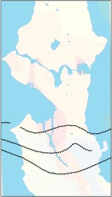
Introduction
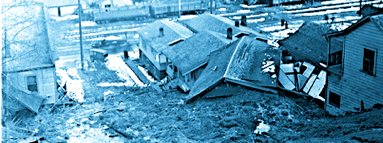
Summary: Despite high susceptibility, no one has yet quantitatively investigated the hazard seismically-induced landslides pose to Seattle from future earthquakes. In this study we investigate a scenario in which the Seattle fault, that passes directly below the city, ruptures in a M7.0 earthquake. Using detailed seismic, geologic, and engineering methods, we investigate the extent of landsliding such an event could trigger and potential impacts to the city and its infrastructure. It’s not good.
For more information see:
Photo from Seattle Municipal Archives
This section is a brief summary of findings from a study funded by USGS NEHRP grant G11AP20012, in collaboration with Art Frankel and John Vidale. A paper with more details on this work is currently in press in the Bulletin of the Seismological Society of America. See links at bottom of page for more info in the meantime.
Final results are in the Bulletin of the Seismological Society of America
More details (but not quite final results) can be found in the Technical Report
An article I wrote about the Seattle fault for Crosscut
USGS page for landslide hazards in Seattle (water-induced mainly)
Geology has bestowed a unique set of natural hazards upon the city of Seattle.
First, it is located at the convergence of two plate boundaries, making the entire region prone to enormous subduction earthquakes, deep earthquakes in the subducted plate, as well as earthquakes in the shallow crust (see USGS graphic at right).
On top of this, Seattle has a unique recipe that makes it particularly prone to landsliding triggered by earthquakes:
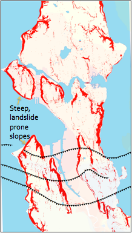
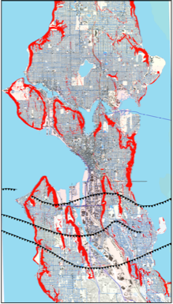
1) Thrust Fault & Amplifying Basin
2) Steep Landslide Prone Slopes
3) Dense Population
Sedimentary Basin that amplifies shaking
Seattle Fault Zone
Seattle Fault Zone
Seattle Fault Zone
In fact, history tells us that the Puget Sound region has been affected by landsliding triggered by earthquakes many times in the past, including landslides triggered by recent moderate earthquakes in 1949, 1965, and 2001.
However, since Seattle is a young city and has not yet experienced its worst quakes, the most spectacular (and eerie) examples are from prior to Western settlement. In particular, enormous block landslides found in the bottom of Lake Washington (see left) - some with old growth forests on them, and some still in growth position. Many of these landslides were triggered by the last Seattle fault earthquake that occurred ~900 A.D.
What would happen if such an earthquake and accompanying landsliding were to occur today???
That is what we sought to answer in this study.
Step 1: Make an earthquake
Step 2: Shake city
Step 3: Assess stability of slopes
In order to simulate landsliding triggered by this scenario M7 earthquake, we needed to realistically estimate how much the ground will shake throughout the city. This is not an easy task. However, with the advent of higher computing power and new methods, we were able to generate a full broadband time series recording for each 210-meter cell throughout the city of Seattle.
The methods we used, based on Frankel (2009), allowed us to include important factors that affect landslide triggering such as 1) amplification within the sedimentary basin north of the Seattle fault 2) high pulses of ground motion as the fault directs energy as it breaks upward (directivity) and 3) both high and low frequency ground motions that contribute to overall ground accelerations together. First we create our fault rupture model:
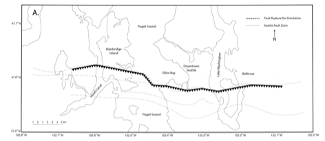
Define a segment of the fault to rupture typical of a M7.0 earthquake
We break a 45km segment of the frontal fault of the Seattle fault zone (see left)
Place over 3000 small point-source earthquakes (mean M4.6) on fault, set them to break at rupture velocity to simulate a bigger earthquake .
Patches of higher slip and moment (red) are determined randomly but with spatial correlation distances representing real M7 earthquakes
We simulate the ground shaking that this earthquake will cause in each 210-meter grid cell using the finite difference method to propagate waves through a 3D velocity model of the Seattle basin by Delorey and Vidale (2011). This simulation accounts for increased shaking in the direction the fault breaks (directivity) and amplification in the sedimentary basin that underlies Seattle. It does not, at this point, account for amplification in the shallow subsurface. The peak horizontal ground accelerations are shown on the map below, at left. Note this is a random iteration of a scenario earthquake and is not a prediction of future ground motions.
To account for the additional amplification due to the shallow subsurface (1D site effects), we built 67 representative soil profiles based on the Geologic Map of Seattle to estimate the amplification for each 5-meter cell throughout the city (see Tech report for more details on how) and adjusted the base ground motions for these amplifications. The change is shown below at right. The highest amplifications (dark red) occur not in areas of artificial fill, which are moderated by non-linear effects, but actually in areas where thin soils with low seismic velocities (like old landslide deposits) overlie areas with higher seismic velocities (like undisturbed glacially deposited soils or soft rock).
Downtown Seattle
Downtown Seattle
Downtown Seattle
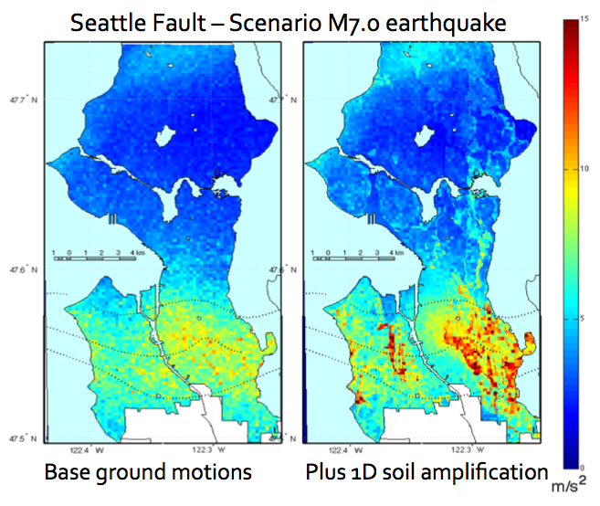
We used these ground motions and detailed slope stability information for Seattle compiled by Harp and others (2006) of the USGS as inputs to the Newmark method (Newmark, 1965; Jibson and others, 2000), a method commonly used to assess regional seismically induced landslide hazard to estimate the likelihood of landsliding in each 5-m cell. This was done for two end members: completely dry soils and completely saturated soils.
The outcome can be viewed by clicking on the figures below. Areas with a non-negligible probability of failure were binned into four hazard categories. Most of the areas with some probability of failing are close to or directly over the fault and along the steep bluffs bordering Puget Sound and Lake Washington, as well as along channels incised by streams. Many of the affected areas are populated.
******Note that this is a regional study that does not take into account site-specific information and should not be interpreted on a site-specific scale. Additionally, though we attempted to remove manmade features from the analysis (buildings/walls/piers), it was impractical to completely remove everything so there are some manmade features that appear as odd-looking unstable slopes in the results.*****
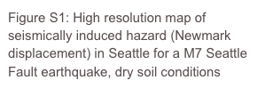

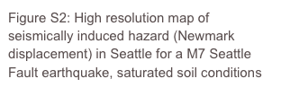

Step 4: How is the city affected
In order to assess the total area expected to fail, we chose particular cells to “fail” in a landslide based on the probability of failure assigned to each cell. The area affected is an order of magnitude larger when soils are saturated than when they are dry.
Though qualitatively the areas affected by landsliding triggered by the scenario earthquake look similar to the areas defined as prone to landslides primarily triggered by water used by the City of Seattle (red areas on first maps of Seattle near top of page), 36% of the cells triggered as “failures” in this study were outside of these areas. This highlights that we cannot assume seismically induced landslides will only be triggered in areas already designated as landslide-prone. Seismically induced landsliding requires dedicated studies.
We investigated the intersections between the areas prone to landsliding triggered by this scenario event and infrastructure. Again, saturated soils result in nearly an order of magnitude increase in the amount of infrastructure at risk from both direct landsliding and being within 60m downslope of areas prone to landsliding (runout zone).
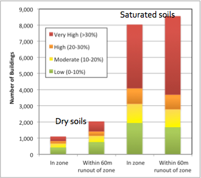
Buildings at risk from landsliding - M7.0 Scenario
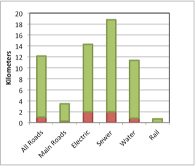
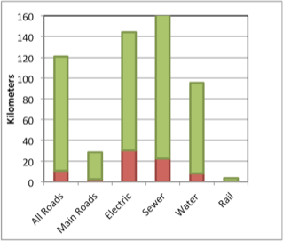
Linear infrastructure in high and very high hazard zones (in red) and within 60m downslope from these potential landslide source zones (in green) - M7.0 Scenario
Dry soil conditions
Wet soil conditions
Though this was just one out of many thousands of possible scenarios, it makes it very clear that landsliding triggered by earthquakes has the potential to be extensive and potentially devastating to the city of Seattle - yet somehow this hazard has received far too little attention.
Several thousand buildings are potentially at risk, as well as tens to hundreds of kilometers of linear infrastructure. Significant damage to housing, businesses, and infrastructure will increase recovery time and reduce resiliency.
Much of this study was focused on improving our ability to assess seismically induced landsliding by using detailed broadband synthetic seismograms. We also identified several scientific issues that need to be addressed to further improve future efforts. This and much more detail about this study can be found in the upcoming paper in the Bulletin of the Seismological Society of America, and by checking out the links below.
References:
Frankel, A. D. (2009). A Constant Stress-Drop Model for Producing Broadband Synthetic Seismograms: Comparison with the Next Generation Attenuation Relations, Bull. Seism. Soc. Am. 99 664-680.
Harp, E. L., J. A. Michael, and W. T. Laprade (2006). Shallow-Landslide Hazard Map of Seattle, Washington, USGS Open-File Report 2006-1139, 18 p., 2 pl.
Jibson, R. W., E. L. Harp, and J. A. Michael (2000). A method for producing digital probabilistic seismic landslide hazard maps, Eng. Geol. 58 271-289.
Newmark, N. M. (1965). Effects of earthquakes on dams and embankments, Geotechnique 15 139-160.
Delorey, A. A. and J. E. Vidale (2011). Basin Shear-Wave Velocities beneath Seattle, Washington, from Noise-Correlation Rayleigh Waves, Bull. Seism. Soc. Am. 101 2162-2175.
Movie of rupturing fault - oblique subsurface view
W
E